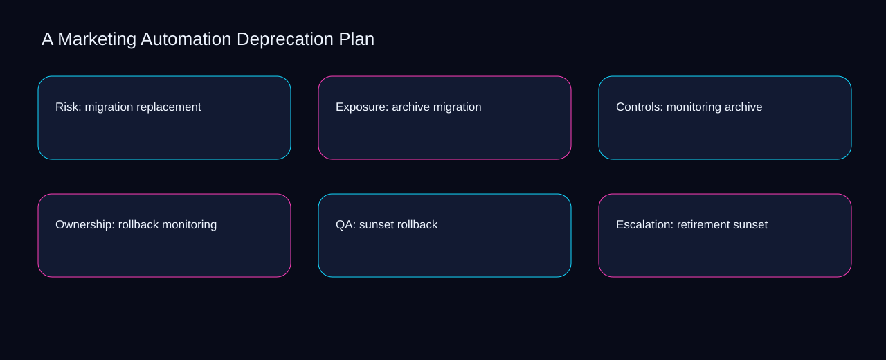

Measurement for marketing automation deprecation plan starts by separating the retirement signal, inventory outcome, and dependencies quality check. A bounded method for turning marketing automation deprecation plan into an owned, reviewable operating practice. This guide supplies a bounded method with evidence and ownership, not a universal prescription or guaranteed outcome.
Risk: migration replacement
Risk: migration replacement begins by separating replacement from migration. Define the artifact, owner, acceptance condition, and excluded work. Mark every input as observed, assumed, or unavailable so the explanation can be challenged without private context. Inspect archive, monitoring, rollback, sunset, retirement in the topic-specific walkthrough. A Marketing Automation Deprecation Plan applies prioritization system to risk; the scope memo records criteria-to-choice with cause-to-control. The record closes when replacement has an owner and migration has an observable trigger.
A review of risk: migration replacement should expose monitoring, rollback, and the decision they inform. Compare a normal path with an exception path. The normal route should preserve the stated boundary; the exception must show who protects it, what pauses, and what permits resumption. Inspect sunset, retirement, inventory, dependencies, replacement in the topic-specific walkthrough. A Marketing Automation Deprecation Plan applies prioritization system to risk; the boundary map records criteria-to-choice with cause-to-control. If evidence breaks between monitoring and rollback, return to diagnosis instead of polishing the artifact.
causal analysis checkpoint
Reopen risk: migration replacement whenever retirement changes the accepted inventory boundary. Trace the causal chain from the first signal to the recorded outcome. Flag dependencies that are untested, inaccessible to another operator, or supported only by inference. Inspect dependencies, replacement, migration, archive, monitoring in the topic-specific walkthrough. A Marketing Automation Deprecation Plan applies prioritization system to risk; the observation log records criteria-to-choice with cause-to-control. A priority remains provisional until retirement survives the inventory review.
Exposure: archive migration
Use monitoring as the entry condition for exposure: archive migration and rollback as its exit evidence. Ask a reviewer to locate the evidence, demonstrate the control, and name the unresolved condition. Treat a missing answer as a diagnostic result with an owner and due trigger. Inspect sunset, retirement, inventory, dependencies, replacement in the topic-specific walkthrough. A Marketing Automation Deprecation Plan applies prioritization system to exposure; the assumption register records criteria-to-choice with cause-to-control. Keep the rejected option beside monitoring so another operator understands the rollback choice.
Place exposure: archive migration inside a bounded scenario involving retirement, inventory, and a named reviewer. Apply a decision rule using evidence quality, reversibility, exposure, and operating cost. Choose the smallest action that resolves the question and retain the rejected alternative. Inspect dependencies, replacement, migration, archive, monitoring in the topic-specific walkthrough. A Marketing Automation Deprecation Plan applies prioritization system to exposure; the decision brief records criteria-to-choice with cause-to-control. Date the retirement evidence and name who will verify inventory.
implementation instruction checkpoint
Exposure: archive migration begins by separating replacement from migration. Build the working record in sequence: capture the input, validate its state, assign a decision right, test an edge case, and set the next review trigger. Inspect archive, monitoring, rollback, sunset, retirement in the topic-specific walkthrough. A Marketing Automation Deprecation Plan applies prioritization system to exposure; the implementation ticket records criteria-to-choice with cause-to-control. The record closes when replacement has an owner and migration has an observable trigger.
Controls: monitoring archive
A review of controls: monitoring archive should expose monitoring, rollback, and the decision they inform. Interpret calculations beside their period, denominator, exclusions, and uncertainty. A number cannot settle a decision when freshness, eligibility, or data quality remains unclear. Inspect sunset, retirement, inventory, dependencies, replacement in the topic-specific walkthrough. A Marketing Automation Deprecation Plan applies prioritization system to controls; the calculation sheet records criteria-to-choice with cause-to-control. If evidence breaks between monitoring and rollback, return to diagnosis instead of polishing the artifact.
Reopen controls: monitoring archive whenever retirement changes the accepted inventory boundary. Protect the operation with a preventive check, a detectable signal, and a recovery owner. Define the stop condition before the team encounters the exception. Inspect dependencies, replacement, migration, archive, monitoring in the topic-specific walkthrough. A Marketing Automation Deprecation Plan applies prioritization system to controls; the control register records criteria-to-choice with cause-to-control. A priority remains provisional until retirement survives the inventory review.
exception handling checkpoint
Use replacement as the entry condition for controls: monitoring archive and migration as its exit evidence. Document exceptions separately from defaults. Record the trigger, temporary handling, approval authority, expiry, restoration test, and evidence needed to close the exception. Inspect archive, monitoring, rollback, sunset, retirement in the topic-specific walkthrough. A Marketing Automation Deprecation Plan applies prioritization system to controls; the exception note records criteria-to-choice with cause-to-control. Keep the rejected option beside replacement so another operator understands the migration choice.

Ownership: rollback monitoring
Place ownership: rollback monitoring inside a bounded scenario involving retirement, inventory, and a named reviewer. Rank actions by decision value, dependency, reversibility, and effort. Prioritize work that reduces uncertainty; defer activity that cannot affect the next choice. Inspect dependencies, replacement, migration, archive, monitoring in the topic-specific walkthrough. A Marketing Automation Deprecation Plan applies prioritization system to ownership; the priority queue records criteria-to-choice with cause-to-control. Date the retirement evidence and name who will verify inventory.
Ownership: rollback monitoring begins by separating replacement from migration. Use each reference for a narrow claim function. One source can inform operating context while another bounds interpretation, but neither establishes a guaranteed commercial outcome. Inspect archive, monitoring, rollback, sunset, retirement in the topic-specific walkthrough. A Marketing Automation Deprecation Plan applies prioritization system to ownership; the source ledger records criteria-to-choice with cause-to-control. The record closes when replacement has an owner and migration has an observable trigger.
measurement guidance checkpoint
A review of ownership: rollback monitoring should expose monitoring, rollback, and the decision they inform. Pair a leading signal with an outcome signal and a data-quality check. Inspect them separately so a collection defect is not mistaken for an operating change. Inspect sunset, retirement, inventory, dependencies, replacement in the topic-specific walkthrough. A Marketing Automation Deprecation Plan applies prioritization system to ownership; the measurement card records criteria-to-choice with cause-to-control. If evidence breaks between monitoring and rollback, return to diagnosis instead of polishing the artifact.
QA: sunset rollback
Reopen qa: sunset rollback whenever monitoring changes the accepted rollback boundary. Set cadence according to change risk rather than calendar habit. Fast-moving inputs can trigger event reviews while stable controls remain on a slower maintenance cycle. Inspect sunset, retirement, inventory, dependencies, replacement in the topic-specific walkthrough. A Marketing Automation Deprecation Plan applies prioritization system to QA; the cadence calendar records criteria-to-choice with cause-to-control. A priority remains provisional until monitoring survives the rollback review.
Use retirement as the entry condition for qa: sunset rollback and inventory as its exit evidence. Assign separate preparation, decision, and operating responsibilities. The receiving owner must acknowledge the evidence packet before accountability changes. Inspect dependencies, replacement, migration, archive, monitoring in the topic-specific walkthrough. A Marketing Automation Deprecation Plan applies prioritization system to QA; the ownership matrix records criteria-to-choice with cause-to-control. Keep the rejected option beside retirement so another operator understands the inventory choice.
escalation condition checkpoint
Place qa: sunset rollback inside a bounded scenario involving replacement, migration, and a named reviewer. Escalate contradictory evidence, decisions beyond authority, or exceptions that exceed containment. Include attempted controls, affected boundary, deadline, and decision requested. Inspect archive, monitoring, rollback, sunset, retirement in the topic-specific walkthrough. A Marketing Automation Deprecation Plan applies prioritization system to QA; the escalation packet records criteria-to-choice with cause-to-control. Date the replacement evidence and name who will verify migration.
Escalation: retirement sunset
Escalation: retirement sunset begins by separating replacement from migration. Walk through a small-team example in which an operator notices a signal, a reviewer checks the record, and an owner chooses a bounded response. Repeat with a failure path. Inspect archive, monitoring, rollback, sunset, retirement in the topic-specific walkthrough. A Marketing Automation Deprecation Plan applies prioritization system to escalation; the scenario transcript records criteria-to-choice with cause-to-control. The record closes when replacement has an owner and migration has an observable trigger.
A review of escalation: retirement sunset should expose monitoring, rollback, and the decision they inform. State the limitation directly. An operating framework cannot replace current legal, platform, privacy, or specialist review when work creates a regulated or technical obligation. Inspect sunset, retirement, inventory, dependencies, replacement in the topic-specific walkthrough. A Marketing Automation Deprecation Plan applies prioritization system to escalation; the limitation note records criteria-to-choice with cause-to-control. If evidence breaks between monitoring and rollback, return to diagnosis instead of polishing the artifact.
tradeoff checkpoint
Reopen escalation: retirement sunset whenever retirement changes the accepted inventory boundary. Expose the tradeoff before acting. Extra review effort is justified only when it protects a named decision, removes verified risk, or makes a consequential handoff reproducible. Inspect dependencies, replacement, migration, archive, monitoring in the topic-specific walkthrough. A Marketing Automation Deprecation Plan applies prioritization system to escalation; the tradeoff record records criteria-to-choice with cause-to-control. A priority remains provisional until retirement survives the inventory review.
Verification: inventory retirement
Use retirement as the entry condition for verification: inventory retirement and inventory as its exit evidence. Reject artifact collection without decision use. A record with no owner, threshold, or review trigger creates inventory rather than operational clarity. Inspect dependencies, replacement, migration, archive, monitoring in the topic-specific walkthrough. A Marketing Automation Deprecation Plan applies prioritization system to verification; the anti-pattern review records criteria-to-choice with cause-to-control. Keep the rejected option beside retirement so another operator understands the inventory choice.
Place verification: inventory retirement inside a bounded scenario involving replacement, migration, and a named reviewer. Verify with a second operator who did not author the record. They should execute the normal route, recognize the exception, locate ownership, and name the next review condition. Inspect archive, monitoring, rollback, sunset, retirement in the topic-specific walkthrough. A Marketing Automation Deprecation Plan applies prioritization system to verification; the verification receipt records criteria-to-choice with cause-to-control. Date the replacement evidence and name who will verify migration.
explanation checkpoint
Verification: inventory retirement begins by separating monitoring from rollback. Reconcile the maintenance history against the current boundary. Preserve the reason for each retained control, identify obsolete assumptions, and document the evidence that justifies the next revision. Inspect sunset, retirement, inventory, dependencies, replacement in the topic-specific walkthrough. A Marketing Automation Deprecation Plan applies prioritization system to verification; the dependency map records criteria-to-choice with cause-to-control. The record closes when monitoring has an owner and rollback has an observable trigger.
Maintenance: dependencies inventory
A review of maintenance: dependencies inventory should expose monitoring, rollback, and the decision they inform. Contrast the current operating state with the intended state. Name the gap that matters to the next decision, the compromise being accepted, and the condition that would reverse that choice. Inspect sunset, retirement, inventory, dependencies, replacement in the topic-specific walkthrough. A Marketing Automation Deprecation Plan applies prioritization system to maintenance; the handoff acknowledgement records criteria-to-choice with cause-to-control. If evidence breaks between monitoring and rollback, return to diagnosis instead of polishing the artifact.
Reopen maintenance: dependencies inventory whenever retirement changes the accepted inventory boundary. Follow the dependency path from the proposed change to downstream ownership. Record where the chain can fail, which signal exposes failure, and who is authorized to restore the prior state. Inspect dependencies, replacement, migration, archive, monitoring in the topic-specific walkthrough. A Marketing Automation Deprecation Plan applies prioritization system to maintenance; the maintenance trigger records criteria-to-choice with cause-to-control. A priority remains provisional until retirement survives the inventory review.
diagnostic prompt checkpoint
Use replacement as the entry condition for maintenance: dependencies inventory and migration as its exit evidence. Run an end-state diagnostic with a fresh reviewer. Ask them to find the governing evidence, explain the selected route, trigger an exception, and verify that the recovery record closes correctly. Inspect archive, monitoring, rollback, sunset, retirement in the topic-specific walkthrough. A Marketing Automation Deprecation Plan applies prioritization system to maintenance; the change history records criteria-to-choice with cause-to-control. Keep the rejected option beside replacement so another operator understands the migration choice.
Reference boundaries
For A Marketing Automation Deprecation Plan, this private guide uses Cybersecurity Framework FAQs from National Institute of Standards and Technology and Email sender guidelines from Gmail Help as public reference anchors. The cause-to-control reading connects retirement, inventory, dependencies, replacement; the constraint-to-action boundary covers migration, archive, monitoring, rollback, sunset. Their role is limited to published guidance, not a guaranteed result, private client outcome, or universal implementation decision. Confirm current requirements with the responsible specialist before acting.
Close the operating loop
At the checkpoint, ask whether monitoring changes the decision, rollback is reproducible, and sunset stays inside scope. Preserve limitations and rejected options for the next reviewer. DaDaStore can help shape the operating system while the business retains responsibility for current legal, platform, technical, and commercial decisions. The F-marketing-automation-5 handoff records retirement, inventory, dependencies, replacement, migration, archive, monitoring, rollback, sunset as topic-specific review inputs.